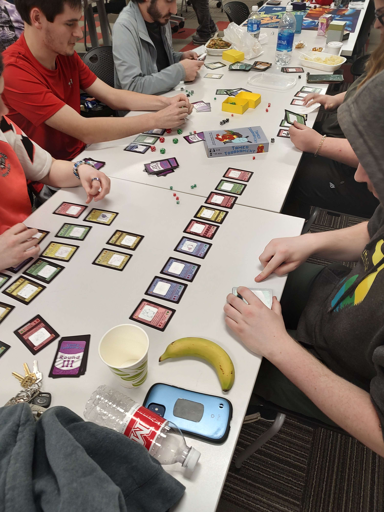
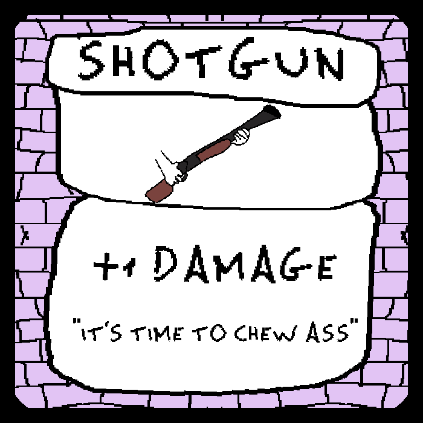
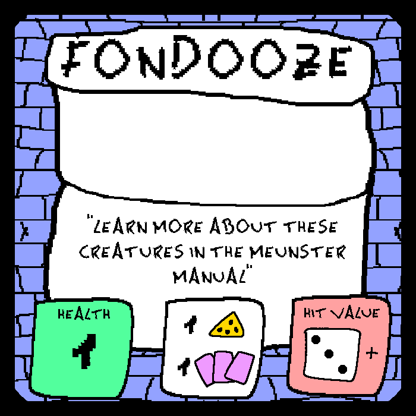
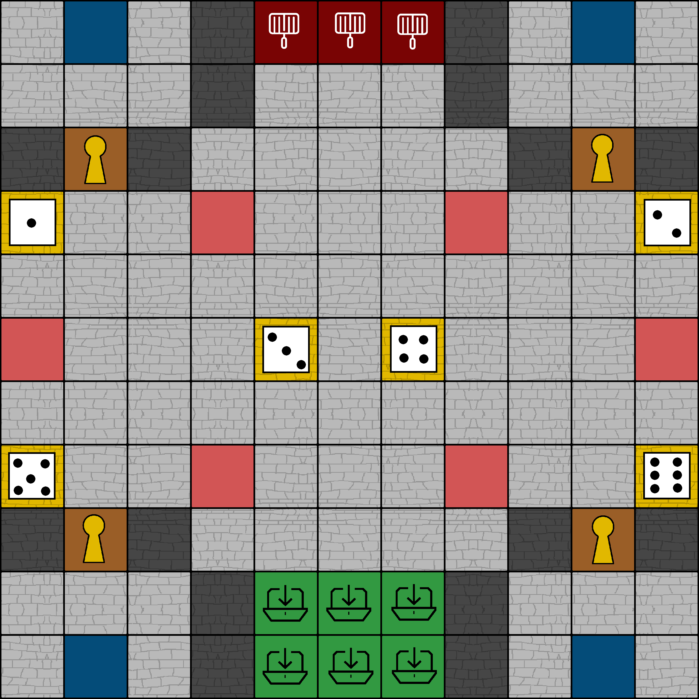
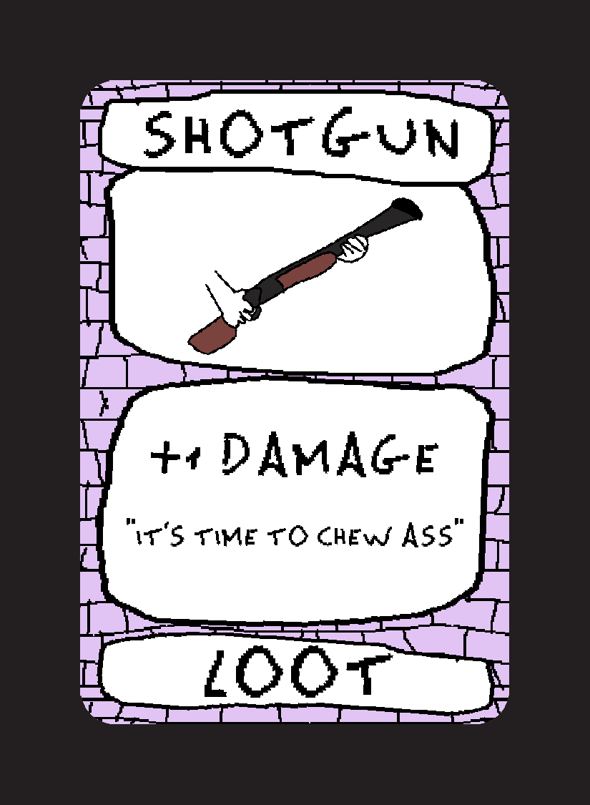
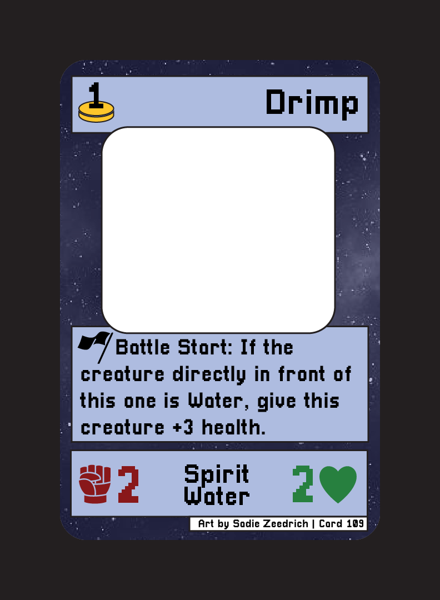
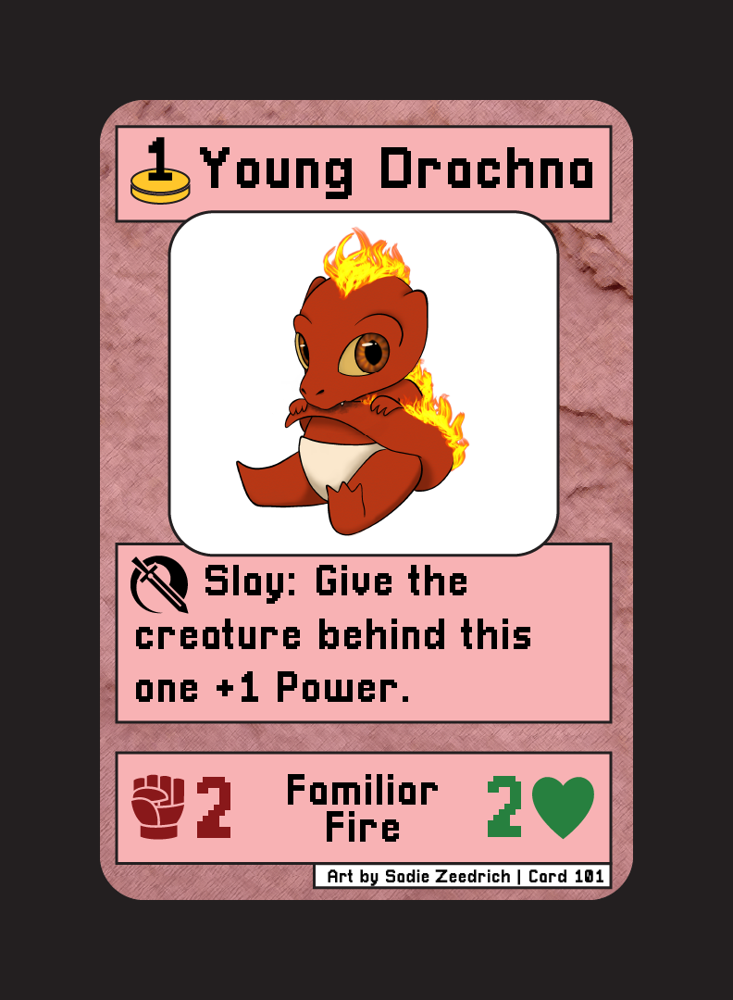
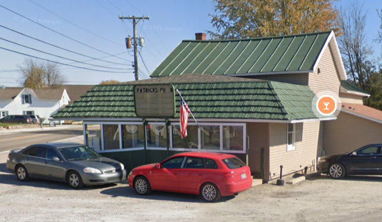

I'm a 20 year old game developer, coder, and designer from Western Ohio.
I'm highly feedback driven, with a commitment to user experience and a passion for nitty-gritty mechanical design.
Contact and Links
Places to find me and ways to get in touch.
Blog
4/11/2023
Started on the card frame.
4/3/2023-4/10/2023
I'm bundling all of these together since I basically just did the same stuff every single day. I talked to a bunch of people and did research on my own to get to a final set of 150 ingredient cards for the final game. This has taken most of the time for this project, but I'm very satisfied with the cards and jokes I was able to get in here, and the only thing I need to do now is turn these into actual card images and write the rulebook, neither of which should be too strenuous (though the cards will probably be pretty repetetive to make).
4/2/2023
Was busy today so couldn't work on stuff.
4/1/2023
Couple more cards.
3/31/2023
Worked on a different personal creative project today. Not actually related to this class but I feel like it was still productive.
3/30/2023
More cards.
3/29/2023
I feel like most of these are just gonna be "Made more cards" for awhile. The rules for the game are fairly simply, the bulk of the work is getting a large enough variety of cards.
3/28/2023
Wrote some more names.
3/27/2023
Spent today working on stuff for other classes.
3/19/2023-3/26/2023
Spring Break! Didn't have too much time to work on the game this week due to job stuff, taxes, and otherwise taking the week off, but I did write down some notes to come back to.
3/18/2023
Wittled away at the card list a bit.
3/17/2023
Wrote down some notes for some potential rules and started a list of cards.
3/16/2023
Had a long convo about the name of the game. Ended up settling on "Marmalada Gumbo" over Pizza, it has better mouthfeel and feels more like a cooking show thing rather than "lol random pizza"
3/15/2023
Worked more on that design doc and brainstormed some different drfaing mechanics.
3/14/2023
Started writing up the design doc for Marmalade Pizza (working title for the ingredient drafing game)
3/13/2023
Taking a small break between projects today for some Tamer
Tournament playtesting! Went well and got a lot of great data that
will inform the next version.

3/12/2023
Burgermancers is complete! There's a lot I'd want to do if this would become a commercial product (and it's also largely unplaytested) but for what it is I think it's pretty cool and at the very least the start of something that could be really really fun.
3/11/2023
Last thing to do is make the rest of the cards. Today I finished all the Loot cards and started on the Monster cards.
3/10/2023
Rulebook is finished! If this was a published game there's obviously a lot I would change about it but as a minimum viable product, it works.
3/9/2023
Worked more on the rulebook.
3/8/2023
Lots of progress today! Remade the card frame in a Square
format to fit on the board, finished the image for the board itself,
and started on the rulebook. Should be set up perfect to finish a
first draft by the end of the weekend!



3/7/2023
Started on a final version of the board. Did you know the first Google result for "11 by 11 grid" is a 10 by 10 grid? That definetly didn't cost me like 15 minutes of redrawing.
3/6/2023
A lot of the previous cards were made in a real hurry and were a bit uninspired. Went back and punched some of those up, as well as took suggestions from friends on some things like better names for enemies.
3/5/2023
After today RECON is finally over and I'll be able to work more on this stuff.
3/4/2023
From the time I woke up to the time I went to sleep today I was at RECON.
3/3/2023
Unfortunately for the second weekend in a row I'm gonna be really busy and not able to work much on stuff for this class. I'm one of the people in charge of RECON, a convention for the clubs at Miami, so I'm gonna spend the weekend on that, including today.
3/2/2023
Worked today on, you guessed it, more card effects.
3/1/2023
I've made a lot of good progress on card effects, which means it's
time to start on grpahic design. Since this would theoretically be
pitched as a Pizza Tower adaptation I wanted to lean into thay
game's very unique art style, and it's very fun to go for.

2/28/2023
This is gonna shock you, but I worked on more cards today! Wow!
2/27/2023
Made a chart for all the enemies and worked on a bunch of those. Did some research into the reception and cards in TBOI Four Souls, a pretty similar game to what this is going for.
2/26/2023
While I did spent today with my brother and then driving and unpacking and then at a club meeting, I did take some time to reflect on the games that I played with my brother over the weekend. We're both big tabletop fans and we played 3 different games over the weekend. The two that stood out the most were Star Realms and War of the Ring, which I had very different opinions on but both I think have important lessons to learn from. This is the research you need to do when working in this field and even if I didn't make any direct progress on Burgermancers I still think it wasn't an unproductive weekend.
2/25/2023
Spent all of today with my brother and the rest of my family. I think I needed the day off.
2/24/2023
Didn't get any ideas while driving. Whoops.
2/23/2023
I'm gonna be out of town all this weekend so I actually just spend today getting caught up on all my other stuff for other classes. Tomorrow I'll be commuting but I usually get good ideas while driving so we'll see if I can make any progress then.
2/22/2023
Drew up a more formal looking board on the Google Doc and rewrote some cards.
2/21/2023
Experimenting with a "Chest" mechanic to make positioning on the board matter: A space in the middle of the board with face-up powerful items you can exchange toppings for.
2/20/2023
Finished the characters and started writing out some item cards, including a specific item that's good for each specific character, encouraging players to attack each other and take the items that are better when playing as their characters.
2/19/2023
Wrote some enemies, items, and characters.
2/18/2023
Wrote 30 different names for different novelty burgers made of different ingredients. You make these on the grill to score points.
2/17/2023
Wrote out the basic structure and lues, plus some random ideas that were rattling around in my head.
2/16/2023
I think I'm at the point where I need to ask: Why am I even doing
this? This isn't the structure I want this setting to take as a
completed project, and it doesn't actually help me get more pieces
completed for the sake of pitching to publishers. My time would be
better spent working on literally anything else.
I still love this setting conceptually, and I really want to make
something out of it, but at least for now I think I need to focus on
a different project.
On that note, I started brainstorming and writing down notes for a
new project today.
Burgermancers
Recently, I played two fantastic games: Pizza Tower, an
action platformer by Tour De Pizza, and
Slay the Spire: The Board Game by Contention Games.
Everything about Pizza Tower oozes love and creativity, from
the 90s Nickelodeon cartton inspired artwork to the zany world and
characters to the incredibly fast and fluid movement. The game sells
its atmosphere of unbridled chaotic fun incredibly well, and it's
hilariously ever-present Pizza theme constributes in a very fun way.
I've been following the game's development since 2019 and after
finally playing the full release, it's only left me wanting more.
Slay the Spire is another one of my favorite video games: The
game largely responsible for the deckbuilder craze that's swept the
indie space. The game is so replayable and mechanically tight and
easy to pick up and play. But what I was pleasantly surprised by was
how great its tabletop adaptation was. Contention Games managed to
convert the gameplay of the video game into a new format, adding
cooperative elements while maintaining the classic deckbuilding and
upgrading, and removing or modifying mechanics to make things work
in a tabletop space. It's very very well done, and it got me
thinking a lot about adaptations.
How would I adapt the fast, fernetic gameplay and atmosphere of
Pizza Tower into a tabletop game? Of course, I don't own the
rights to Pizza Tower, so this would need to be its own thing. I'd
love to actually pitch this as a Pizza Tower game to the devs to see
if I could secure the license, once it's in a state where that's
possible, but for the sake of this class I'm going to stick to it
being its own IP. More progress to come.
2/15/2023
Alright, Page 2 is done now. I'll be honest while I have a bunch of ideas rattling around in my head for this project I really am not feeling actually writing them down. But I'll just keep working at it until things click.
2/14/2023
Got more into the rhythm of how SR66 is gonna work: Google Earth can provide most of the important phorography used for visuals, and writing will be as part of panels to the side of each photograph. Worked on the first page in this structure today.
2/13/2023
Alright, gotta get right into the next project. I did do a little bit of planning and sketching out of the SR66 pamphlet, but I did spend most of today working on a different personal project. Tomorrow I'll work more on it.
2/12/2023
We did it!
Finished up all the last cards, Sadie finished up all the art, and I
also spent a bunch of time making the box and a bunch of assets for
the website. Also ordered a copy of the game for my own: It'll be a
bit before it gets here and I can actually sell the game to people,
but it's done and I'm so excited about that.
You can see it for yourself here.
2/11/2023
I had free time all day today so I was really excited to finish up the project. Unfortunately, my Adobe rental decided today would be a great day to end, and I won't be able to take out another rental until tomorrow. Which means I can't actually do the last card renders until then, or even add or fix things in the rulebook. That's really infuriating, honestly. I did still make progress today, getting everything I could uploaded to the Game Crafter website, but tomorrow is gonna be a whole lot busier now.
2/10/2023
Chipped away at a bunch more final card renders, over halfway done with those. The end is in sight!
2/9/2023
Finished the rulebook today! That's about the only thing to report but that's a big milestone.
2/8/2023
The deadline for this project is fast approaching, but progress is coming along very very well! Made a lot of progress on final card renders (got 12 done) as well as about one-third done with the rulebook.
2/7/2023
Worked more on the card frame: The Elements (Air, Water, Fire,
Earth) each have a color and the Types (Spirit, Familiar, Monster)
all have background texture so you can at a glance tell what each
card is.

Also touched base with Sadie: Not all of the card are gonna have
nice finished art like Baby Drachna does, but they will all have at
least sketches, which is good enough for an initial version I think.
2/6/2023
Touched up some on the mechanical side and set the card quantities.
Most importantly though, we now have a card frame! Not the most
professional looking work in the world, but it's visually appealing
I think, especially enough for a prototype.

(Don't mind the really thick border, that's for making the printing
service work right. Gotta give it some wiggle room.)
2/5/2023
The good news: I got a lot of great playtesting in today! (By
myself, since I'm still a little sick.)
The bad news: There's a lot more changes I'll need to make to this
game than I thought.
The foundational mechanics are still good and the changes since the
last version have all been positive, but there's a ways to go yet.
Specifically, the downsizing I did to the card pool was too much:
The 5 card packs had so little freedom that the players weren't able
to get really solid decks together. I think I've also identified
that the during draft effects, while cute, are just too much of a
pain to keep track of to be worth it.
I think the best way to increase the cardpool without making Sadie
need to draw a bunch more art is to add extra copies of specifically
the non-specific cards to the pool. I won't have time to make a new
prototype, but I think I have decent enough idea of the balance
changes I want to make that that will be fine.
2/4/2023
Had nothing to do today so was really excited to get a lot done on Tame Tournament and some other assignments. Unfortunately I woke up sick as a dog and had very little energy to do anything. I still got some assignments done but overall spent the day lying in bed and churning through an entire box of tissues. Tomorrow hopefully I'm feeling more up to testing.
2/3/2023
As I mentioned yesterday, today I had a job interview and plans with friends, so I was booked. The interview went great though!
2/2/2023
2 and a half hours later, the prototype is back in business! I'll
probably be busy tomorrow with my job interview and other plans, but
I'll try to get another playtest in ASAP.

2/1/2023
Spent today creating the renders for the great big redesigned cards. Gonna spend tomorrow making a physical prototype for this new version, then going to hop straight into playtesting it as soon as possible.
1/31/2023
The great big redesign is completed! Spent a bunch of time yesterday finishing that up. Tomorrow I'm gonna start translating this over to the physical prototype.
1/30/2023
The great big redesign begins! Basically all the cards are getting reworked based on the data from the last playtest. Spent about 3 hours total working on it today, and it's just about done. The downsizing is gonna be good for getting the art done, too.
1/29/2023
First big playtest was today! A whole lot of things went horribly
wrong but that's okay. Here's what we learned.
• There's too many buffs and the buffs are too high. Players had
70/70 creatures by Round 3. That should not be able to happen.
• 8 cards per pck and 8 points per round are both too much.
• Having both temporary and permanent buffs was a bit confusing, and
permament buffs contributed towards the crazy endgame numbers.
• Certain effects were really annoying to try to resolve, with
regards to math and decision complexity.
I've got some ideas for that to change to fix these things, but
they're going to require some fairly drastic retooling of the cards,
so it'll take a few days I suspect.
1/28/2023
Redid the names and art descriptions for a whole bunch of the cards. The current ones, a lot of them were either total placeholders or didn't really match up with their assigned types very well (Young Drachna was a Fire Familiar, but Middle Aged Drachna was an Air Monster!). Now, not only do they make a lot more sense and avoid overlap with the same kind of creature on more than one card, there's also a whole lot better pun names. These changes were also made to the physical cards. Planning on doing some playtesting tomorrow.
1/27/2023
Spent today working on the "Introduce Yourself" video and things for other classes so didn't have much time to work on personal projects. Was still on the whole a productive day, though.
1/26/2023
Went through all the cards from the prototype I have printed out and added the new card numbers to them. This will make it easier to make changes during playtesting and keep track of things, but there were also 192 cards so it took awhile.
1/25/2023
Lots of progress today on Tamer Tournament. Sadie and I finalized
our plan for how the collaboration is going to work, and I made a
great big planning document for all the cards so we can track
progress on rebalances and artwork. That took most of the day.
I've also encountered a potential conceptual problem with State
Route 66's in-world world guide. Several important details about the
way the world works are totally unknown to its residents. There's
not a perfect way to address this while still keeping the in-world
component intact, though I have had a couple ideas. Specifically,
maybe having stuff written in the margins by the theoretical
protagonist of the game, who learns these things over the course of
their adventure. These being handwritten in pen in the blank spaces
of an otherwise printed-appearing document should hopefully make
that clear enough.
1/24/2023
Spent today researching some possibilities for what to do with State
Route 66. On itch.io I was able to find a lot of really cool setting
guides for TTRPGs: Many of them were tailored to one specific game
system but many were also not. One specific one that I found
interesting, though, was "Endsville."
Link to Endsville on itch.io
Endsville is a setting guide, but written in-universe. This is a
really compelling idea for me: Not only does it mean I don't have to
tie this to a specific game system (that would break up the flow a
lot, imo) it also has lots of its own opportunities for that good
Midwestern flair, like one of those travel guides you get at an
interstate rest stop.
There were some other ideas I explored, such as the game "Roll
Player" which is essentially competetive character creation: Pretty
cool, but I think an execution of that idea for this setting would
more likely want to be cooperative, and I'm not quite as enthused
about this idea.
The idea of a diagetic world guide, though, is one I'm really fired
up about, and I think that's what I'm going to do with SR66 in this
class.
In blog news, today was actually my birthday. So that's nice.
1/23/2023
Wow, first blog post! Here's where I'll be posting progress on my
independent projects: I'll try to post something every day. I won't
necessarily have something to show for my work every day, but at the
very least I'll have chipped away at something.
On a thematic level it might have been better to wait to start this
until tomorrow, since that will be the first day of my 20s.
"Beginning of a new era" and all that. But ideas wait for no one so
this is what you're stuck with.
Today I wanted to try and get at least a rough idea of the projects
I was going to spend the next semester working on. All three of
these are for a class intended to help with building a portfolio and
the skills needed to make a living as a creative. Scoping out these
things has proven difficult, though. I have a lot of ideas for
things to make, but a lot of them are either a bit nebulous at the
moment or are of far too grand a scope to be doable within one
semester.
State Route 66
This is the oldest of the projects I intend to do something with
this semester, originating all the way back while I was in high
school.
The biggest thing with this project is its setting, and that's
basically the starting point for any project I end up making out of
it. This idea was inspired by road-tripping around rural Ohio, and
the unique atmosphere of long evening drives down sparsely populated
state routes.

This setting takes this idea and gives it a fantastical spin. There
are two all-powerful beings in the world, a being of Creation and a
being of Destruction. Every million years, the being of Destruction
annihilates the world, before slumbering for another million years
as the being of Creation remakes it anew. However, an excavation
project accidentally awakens The Maelstrom early, and while it wipes
out all of humankind, its work is left incomplete before it runs out
of energy, so human civilization is left behind after its
destruction.
The being of Creation, unprepared for this premature awakening, does
their best to repopulate and remake the world as quickly as
possible, shoving the still-present souls of eradicated humans into
animals, objects, and whatever else it could find. These newly
humanoid creatures repopulate this halfway-destroyed world, with
lingering memories of language and purpose but a lack of context and
history. However, hundreds of years later, the being of Creation
senses that the being of Destruction will reawaken again far too
soon, and so tasks a ragtag group of heroes with venturing to its
resting place at the excavation site and putting a stop to this
unnatural disruption of the cycle. So would begin a road trip across
the country, meeting a wide cast of characters and overcoming
various regoinal obstacles along the way.
The original idea for this project was something like a combat-light
JRPG. Essentially, each fight in the game would be a unique
character, almost like a bunch of minibosses, and winning each fight
would give you access to that character's phone number, where in the
future you could call them in battle where they'd use a special
ability. This would essentially be your spells: Calling different
phone numbers would use different amounts of your phone's battery,
which would work like MP in other games. Each different assist would
have a unique effect, and you only have limited memory on your phone
to store the numbers you want to use, introducing a
deckbuilding-like element of finding different synergies and
strategies between all these unique skills. Thematically, this would
emphasize the importance of each individual person you meet in your
trip, and enshrining each memory as a permanent addition to your
arsenal of tools really hammers home that aspect of what I love
about traveling. In between these combat encounters would be a whole
lot of dialogue, puzzle solving, and rural-inspired setpieces and
enviornments.
This probably sounds like absolute nonsense: Once I get into working
on this project I'm going to write up a better introduction to the
setting, but right now I'm just trying to get the core ideas across.
The point is, though, this RPG is something I'd love to make at some
point, but is wildly out of the scope of what I can make in this
class. I really enjoy this setting and want to make something with
it though, if nothing else just to put my ideas to paper with what I
want out of this world. Maybe a TTRPG or world guide for one?
Tamer Tournament
This is both the first project I'm likely to start working on and
maybe the one I'm most excited about. This tabletop game was first
made for EDL290T, the Tabletop Games & Leadership class. I was
excited about it then and I'm excited about it now. You can see the
initial version of the game in the Portfolio tab, but my goal for it
in this class is to playtest it, refine it, work on the flavor and
art aspects, and then publish it as a full for-sale print and play,
if not actually pitch it to a games publisher.
I'm potentially going to be working with Sadie Zeedrich on this
project, with her contributing artwork. I'm no artist, and as a
collaborative piece I think it would be beneficial for both of our
portfolios.
And...Something Else
I've had ideas for other things, of course, but I haven't decided on
what I would want to do as a third project for this class. Here's a
nonexhaustive list:
• Drafting party game where you have to pitch the other players on a
meal created from odd combinations of ingredients.
• Expansion upon the Cosmic League Baseball Idea
I'll add more to this list as I get the ideas.
Last updated 4/3/23